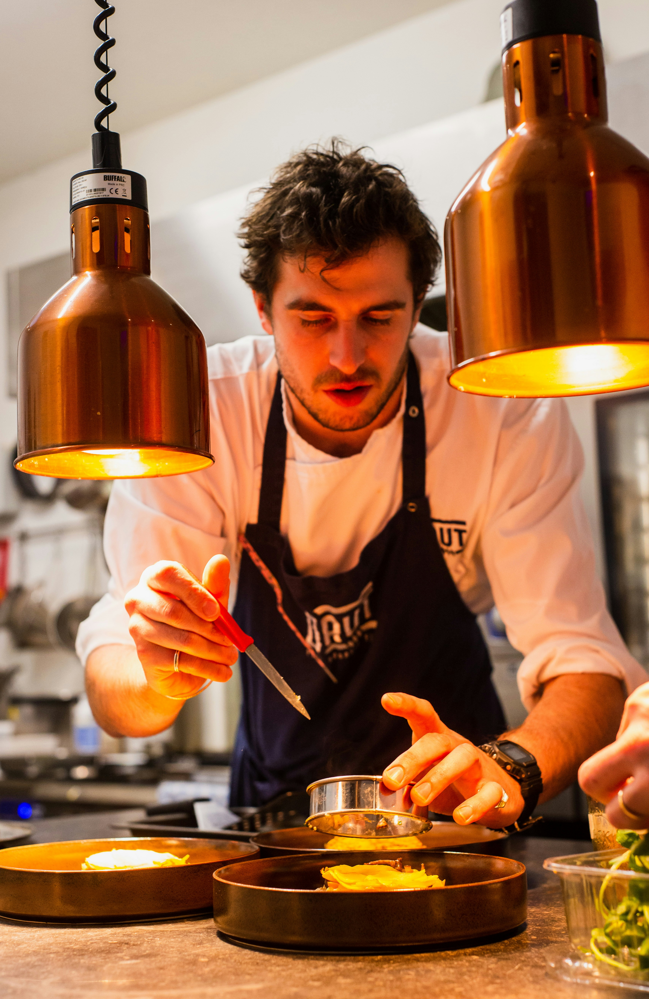
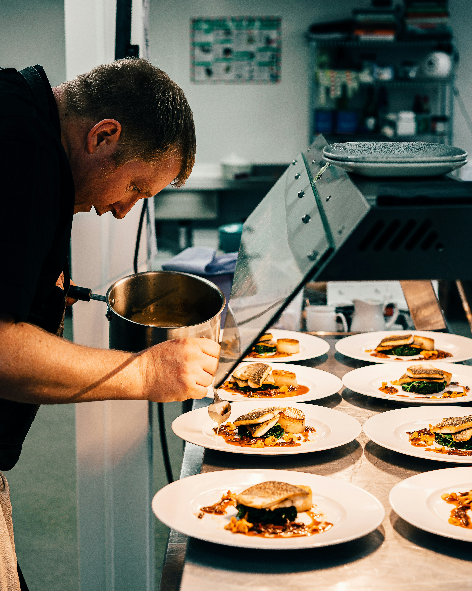
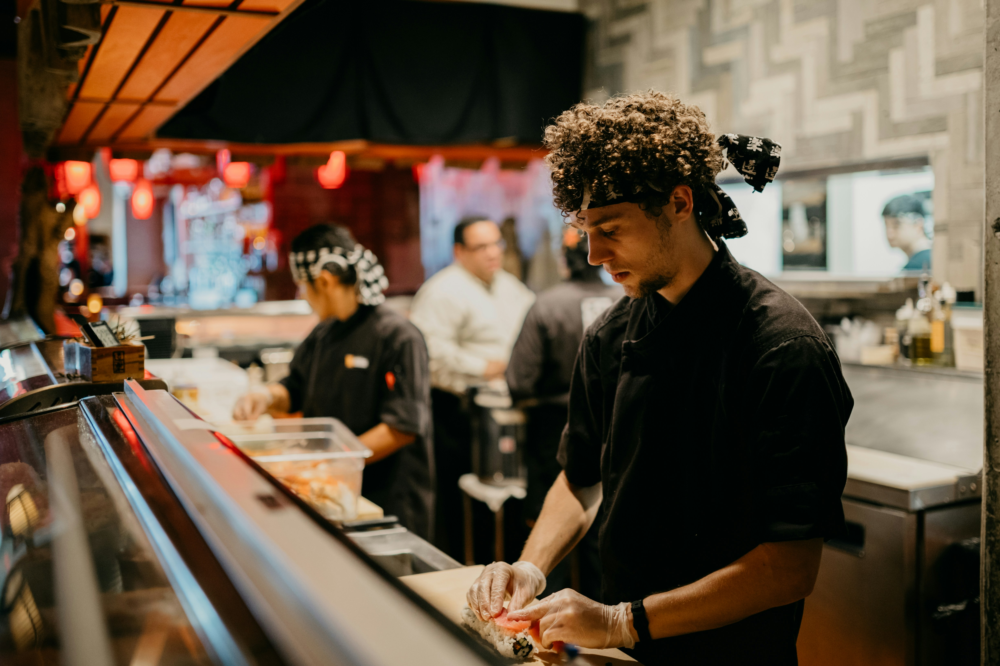

Jonh Krasinsky
Chef PrincipalEncargado de los cortes finos especiales
Las personas detrás de cada experiencia.

Encargado de los cortes finos especiales

Encargado de darle el sazón a las comidas

Encargado de servir la comida al tiempo justo
Selección con John Krasinsky, Chef Principal, quien define la idea del plato y selecciona cortes e ingredientes. Su entrega es la ficha de receta con ingredientes pesados y cortes listos.
Preparación con Mark Gordon, Chef Secundario, quien aplica sazón y cocción. Su entrega es el plato montado en cocina y verificado en punto y temperatura.
Servicio la cierra Marco White, Camarero, quien verifica presentación en mesa y tiempos de entrega. Si hay un ajuste de sala, lo devuelve a cocina antes de servir,